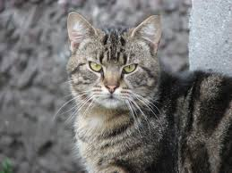
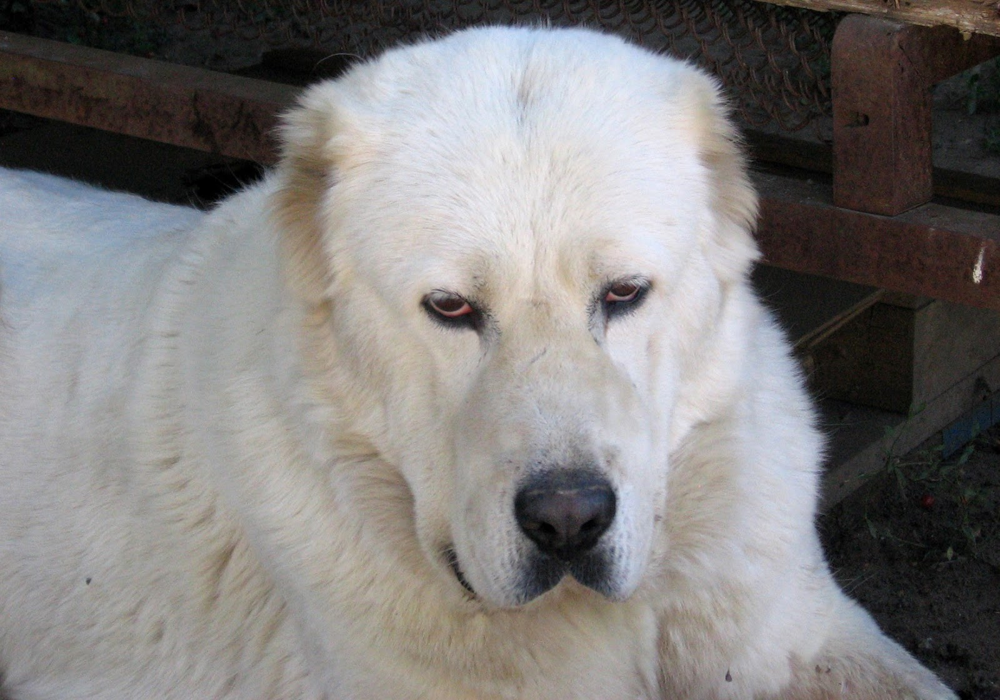

Люблю кошек и собак. Это амечательные животные. Сия "проба пера" посвящена одной кошке и одной собаке.
внезапно, кусок из "Золушки"
Once upon a time...
Давным-давно жила-была одна счастливая семья: отец, мать и
их единственная дочка, которую родители очень любили. Много
лет жили они беззаботно и радостно.
К несчастью, однажды осенью, когда девочке исполнилось
шестнадцать лет, ее мать тяжело заболела и через неделю умерла.
В доме воцарилась глубокая печаль.
Прошло два года. Отец девочки познакомился с одной вдовой,
у которой были две дочки, и вскоре женился на ней.
С первого дня мачеха возненавидела
свою падчерицу. Она
заставляла ее делать всю работу
по дому и не давала ни минуты
покоя. То и дело слышалось:
— А ну, пошевеливайся, лентяйка,
принеси-ка воды!
— Давай, бездельница, подмети
пол!
— Ну, чего ждешь, грязнуля,
подкинь дров в камин!
введите имя
введите фамилию
О кошках можно говорить бесконечно...но я не буду.
 На фото представлен обычный суровый дворовый московский кот.
За сосиську порвёт любого. Такого все кошки любят, а собаки боятся. Хороший кот. Дачу может охранять.
Опять про Золушку.
Волшебница выдолбила тыкву
до самой корки, потом прикоснулась
к ней своей волшебной
палочкой,
и тыква мигом превратилась
в золочёную карету.
Потом волшебница заглянула
в мышеловку и увидела, что там
сидят шесть живых мышей.
Она велела Золушке приоткрыть
дверцу мышеловки. Каждую
мышь, которая
выскакивала
оттуда, она трогала волшебной
палочкой, и мышка сейчас же
превращалась в красивого коня.
Соба-а-а-а-ка)
 На фото представлен обычный такой алабай.
Порвёт любого и за просто так.
Очаровательная помесь собаки и медведя.
"Не люблю больших собак..Никогда не знаешь, кого они жуют.."
А мне нравится. Хороший пёс, большой, пушистый.
Обойдёмся без Золушки..